Joey Clothing,
redesigned for trust.
A high-fidelity mobile e-commerce prototype that fixes trust issues, simplifies the checkout journey and makes product discovery clearer for fashion customers.
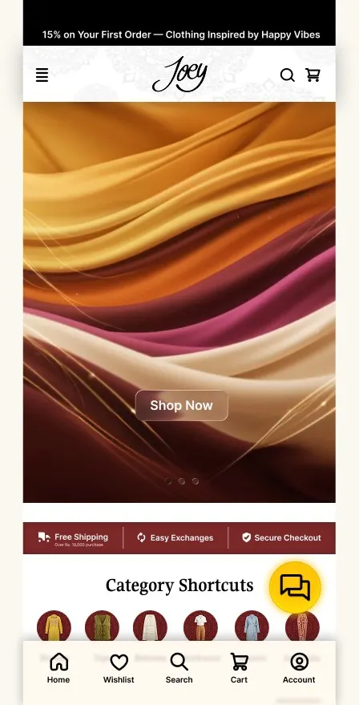
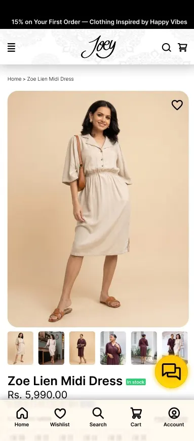
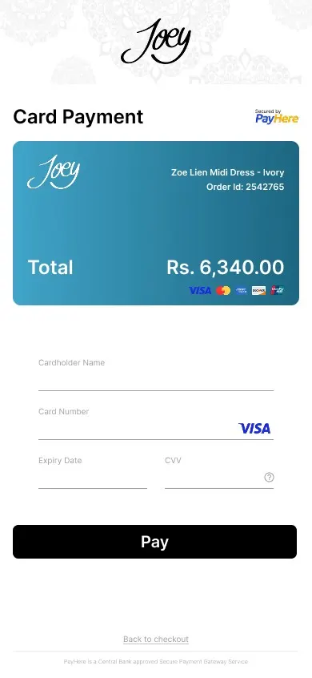
Why this redesign was worth solving.
Joey Clothing already had the base of an online store: product listings, cart, policies, checkout and customer accounts. That made it a realistic university redesign, because the goal was not to invent a new business but to improve an existing shopping journey.
The main challenge was trust. Customers need to understand products, shipping, payment, order status and support before they feel safe enough to buy on mobile.
Trust signals
Shipping, exchange, secure checkout and policy information moved into visible places.
Mobile speed
Bottom navigation, category shortcuts and direct cart actions shorten the path.
Product clarity
Price, rating, availability, colour, size, care and returns, all on the product page.
After-sale support
Order tracking and a chatbot help users after payment, not only before it.
Four issues that weakened the journey.
The official site was reviewed first. The biggest problems were not only visual. They hit confidence at decision points: account creation, policy reading, product details and the cart.
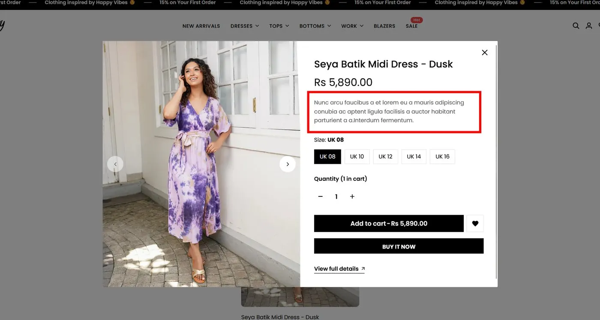
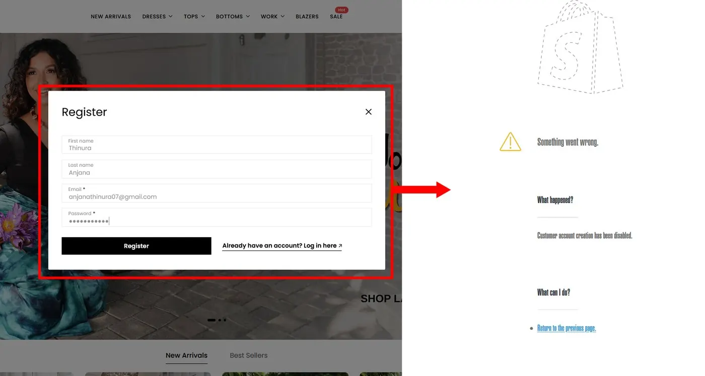
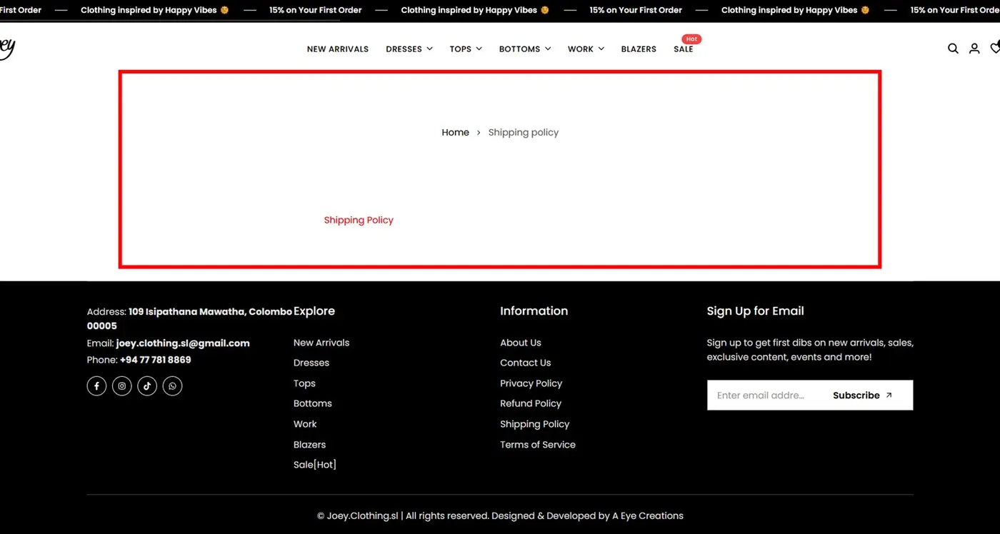
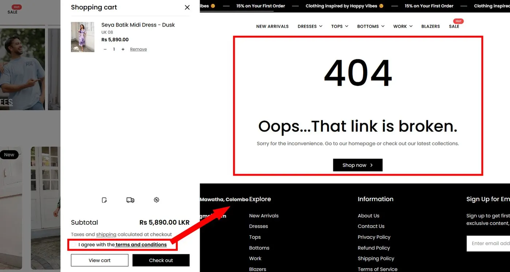
Every step guided, safe and clear.
The redesign keeps Joey's fashion identity but fixes the shopping logic, bringing key decisions closer to the user instead of hiding them.
Discover
Hero image, trust strip, category shortcuts and bottom navigation.
Compare
Two-column grid with filters, sorting, prices and wishlist.
Decide
Images, colours, reviews, stock, care, delivery and return notes.
Pay
One card payment flow with a clear amount and OTP confirmation.
Track
Confirm the order, track delivery or ask the Jenny chatbot.
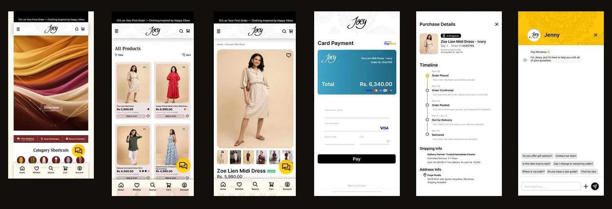
Twelve screens, in shopping order.
Enter the store, browse, inspect a product, pay, confirm, track and get support. Drag or swipe through the prototype.
Home
Hero, trust strip, shortcuts, bottom nav and chatbot entry.
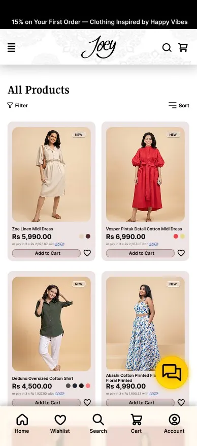
Product list
Two-column grid with filter, sort, cart, wishlist and pricing.
Product detail
Images, rating, size, colour, stock, care, delivery and returns.
Card payment
One direct card flow with amount, card details and pay action.
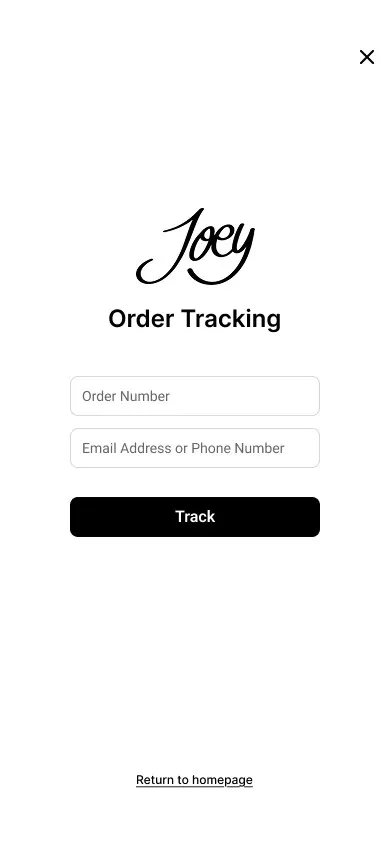
Track search
Order number with email or phone before viewing status.
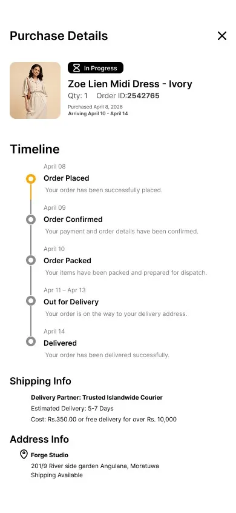
Order timeline
Order ID, status timeline, courier, estimate and address.
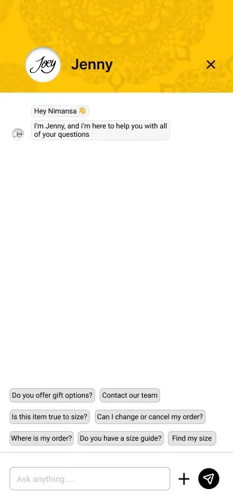
Jenny chatbot
FAQs for sizing, order status, contact and cancellations.
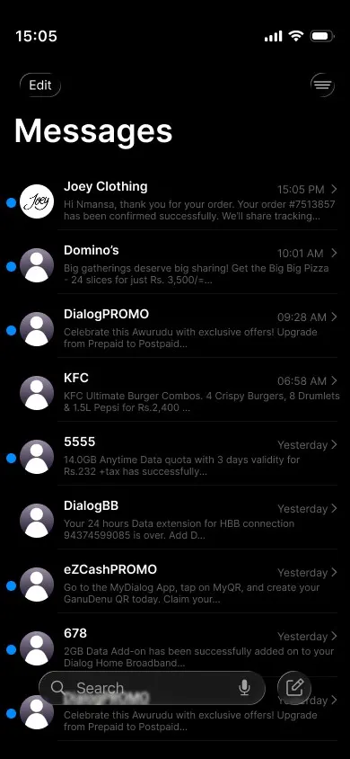
Message UI
SMS-style confirmations and courier updates.
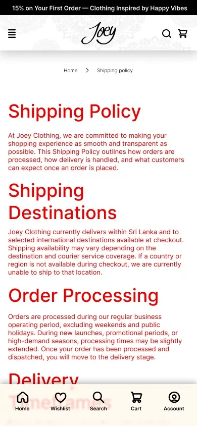
Shipping policy
Destinations, timing, charges, duties, returns and refunds.
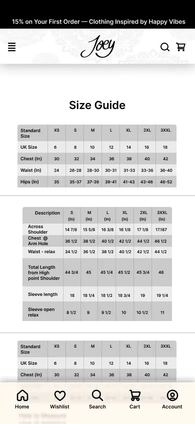
Size guide
Measurement tables that reduce size confusion.
Login
One clean route into the account, with fewer distractions.
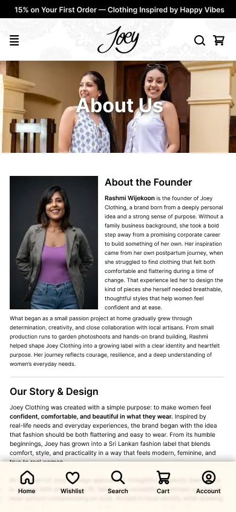
About
A brand story page that gives the business a human face.
Small decisions that reduce friction.
Each change answers a business problem: trust before payment, clarity before choosing, support after the order.
Trust strip
Free shipping, easy exchange and secure checkout appear early on the home screen.
Bottom nav
Home, wishlist, search, cart and account stay within thumb reach.
Product cards
Name, price, instalment note, colour, rating, wishlist and add to cart.
Policy clarity
Shipping and terms are separated and written clearly, with no broken links.
Payment focus
Unneeded alternatives removed so the card process stays direct.
Support layer
The chatbot and order tracking carry the user after purchase.
One complete mobile flow board.
The high-fidelity board connects every screen: discovery, purchase, confirmation, delivery tracking and support.
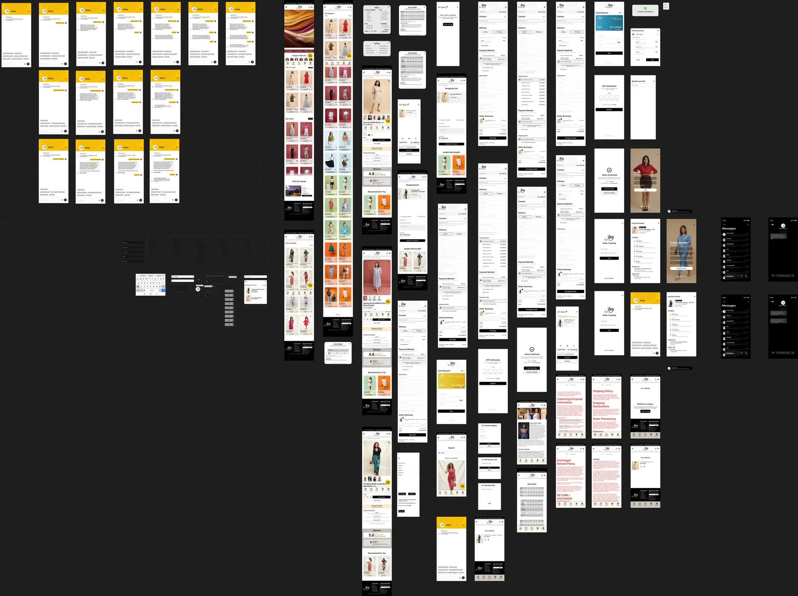
The redesign turns Joey's mobile store into a clearer shopping system: easier to browse, safer to trust, smoother to pay, and stronger after the order is placed.